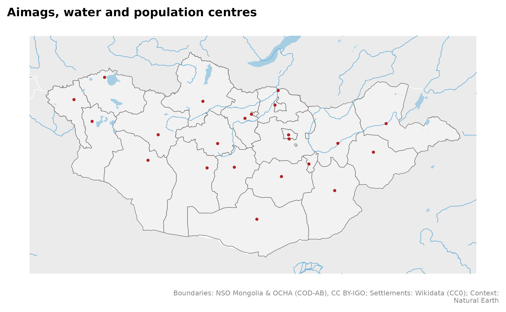
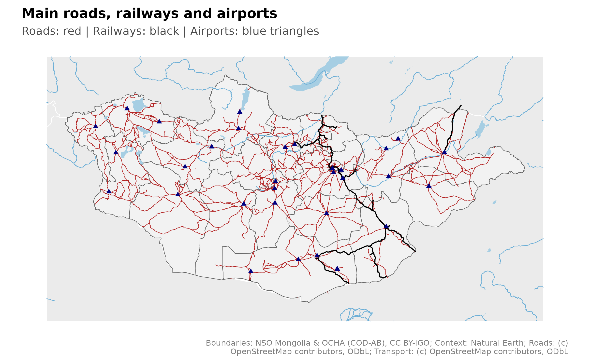
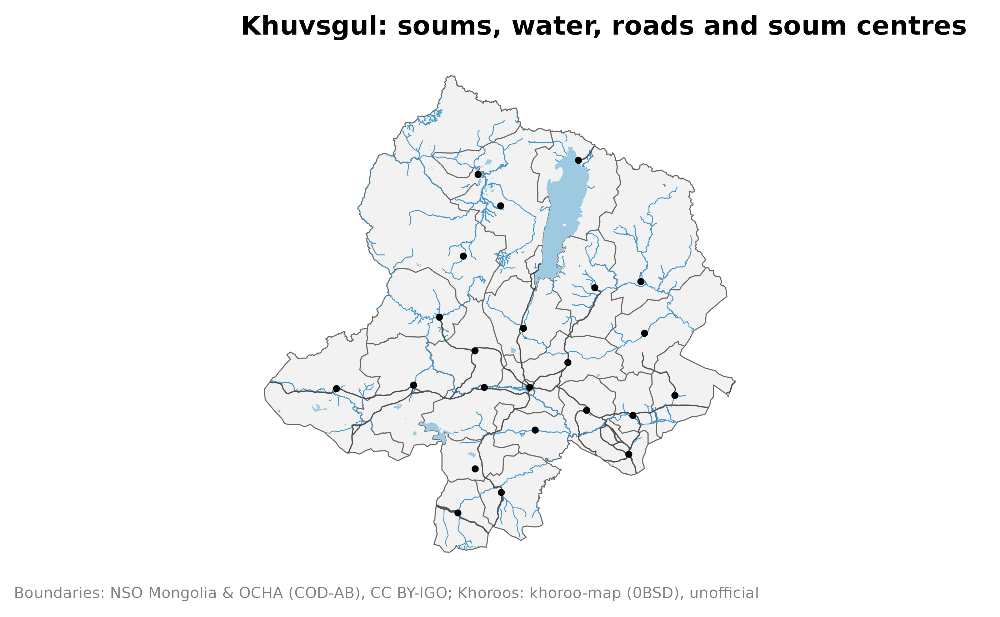
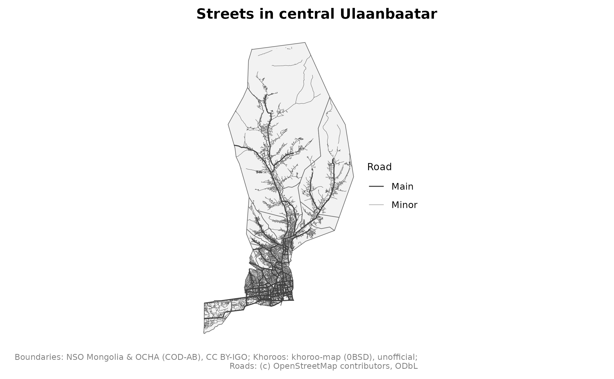

Add background layers to explain where places are and how they connect. Start with the included rivers, lakes and settlements. Road and street layers download the first time you use them and are saved for later use.
| Layer | Function | First use |
|---|---|---|
| Capital, aimag and soum centres | mn_settlements() |
Included |
| Neighbouring countries | mn_neighbours() |
Included |
| Major rivers and lakes |
mn_rivers(), mn_lakes()
|
Included |
| More detailed mapped water features |
mn_rivers("all"), mn_lakes("all")
|
Download |
| Roads and streets | mn_roads() |
Download, about 30 MB |
| Railways, stations and airports |
mn_railways(), mn_airports()
|
Download |
| Mapped towns and villages | mn_places() |
Download |
“All” means all features available in the source, not a complete inventory. OpenStreetMap coverage varies by area.
Start without downloads
mn_map(mn_aimags(), context = TRUE) +
geom_sf(data = mn_settlements(type = c("capital", "aimag_centre")),
colour = "firebrick", size = 1) +
labs(title = "Aimags, water and population centres",
caption = paste(strwrap(mn_citation(c("admin", "naturalearth", "settlements")), width = 95), collapse = "\n"))
Add national transport routes
mn_roads() selects main roads by default. Use thinner
lines for roads and thicker lines for railways so the layers remain
distinguishable.
mn_map(mn_aimags(), context = TRUE) +
geom_sf(data = mn_roads(), colour = "firebrick", linewidth = 0.25) +
geom_sf(data = mn_railways(), colour = "black", linewidth = 0.5) +
geom_sf(data = mn_airports(), shape = 17, colour = "navy", size = 1.5) +
labs(title = "Main roads, railways and airports",
subtitle = "Roads: red | Railways: black | Airports: blue triangles",
caption = paste(strwrap(mn_citation(c("admin", "naturalearth", "osm_roads", "osm_transport")), width = 95), collapse = "\n"))
Show one aimag
within selects an area and clips lines at its boundary.
The example below downloads the detailed water layer as well as
roads.
aimag <- "Khuvsgul"
mn_map(mn_soums(aimag = aimag)) +
geom_sf(data = mn_lakes("all", within = aimag), fill = "#9ecae1", colour = NA) +
geom_sf(data = mn_rivers("all", within = aimag), colour = "#4292c6", linewidth = 0.2) +
geom_sf(data = mn_roads(within = aimag), colour = "grey30", linewidth = 0.3) +
geom_sf(data = mn_settlements(within = aimag), size = 1) +
labs(title = "Khovsgol: soums, water, roads and centres",
caption = paste(strwrap(mn_citation(c("admin", "osm_roads", "osm_water", "settlements")), width = 95), collapse = "\n"))
Zoom in to city streets
Show a few districts rather than all of Ulaanbaatar when you want to see streets. Draw khoroo boundaries over a plain background so they do not compete with road colours.
# Bayangol, Chingeltei, Sukhbaatar
central <- c("MN1107", "MN1125", "MN1119")
streets <- mn_roads(class = c("main", "minor"), within = central)
#> Re-reading with feature count reset from 20405 to 20404
mn_map(mn_khoroos(district = central)) +
geom_sf(data = streets, aes(linewidth = class), colour = "grey25") +
scale_linewidth_manual(values = c(main = 0.45, minor = 0.12),
breaks = c("main", "minor"), labels = c("Main", "Minor")) +
labs(title = "Streets in central Ulaanbaatar", linewidth = "Road",
caption = paste(strwrap(mn_citation(c("admin", "khoroos", "osm_roads")), width = 95), collapse = "\n"))
Work offline and give credit
mn_cache_dir() shows where downloaded files are saved.
mn_cache_list() lists them. Download the layers you need
before going offline:
mn_download(c("osm_roads", "osm_transport", "osm_water"))Include all layer providers in the caption when combining maps.
OpenStreetMap data use the Open Database Licence;
mn_citation() provides the credit text.